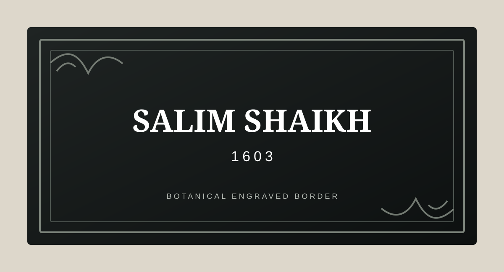
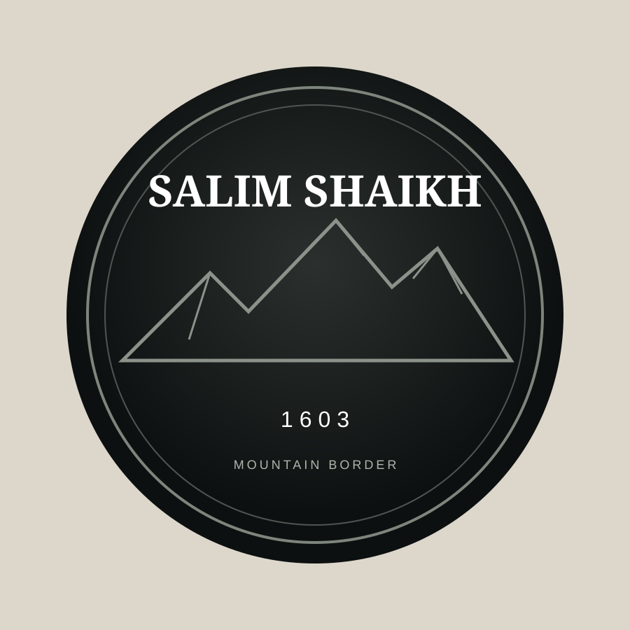
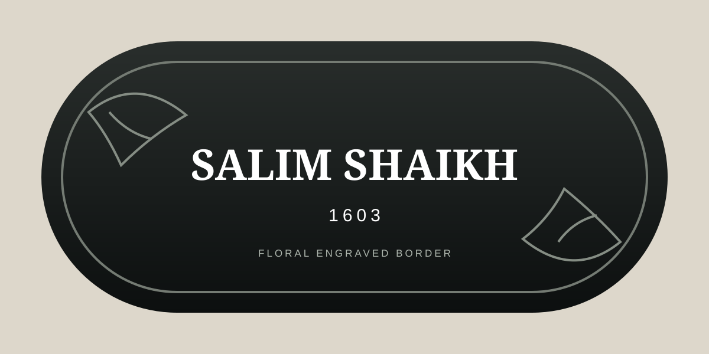
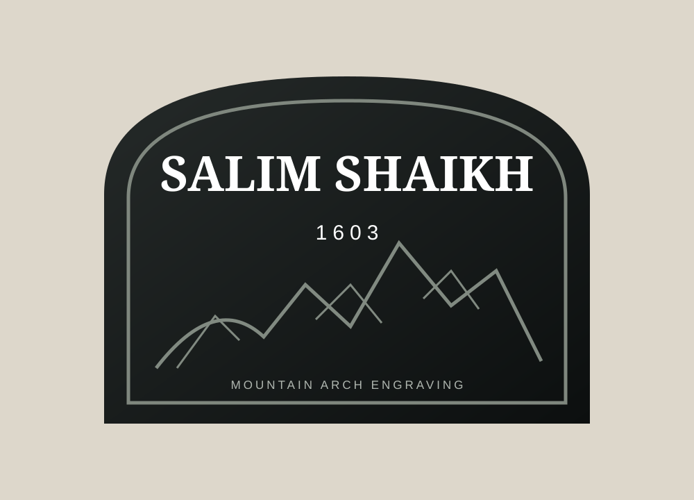

01 · RECTANGLE
Botanical Frame
Double engraved border with subtle leaf details at opposite corners. Suited to charcoal wood or clear cast acrylic.
ENGRAVED & CHARCOAL
Decorative engraved-border nameplates built around clear cast acrylic and charcoal wood, with raised acrylic lettering and optional LED illumination.
FOUR STARTING DESIGNS
These are original The Art Factory sample templates inspired by the clean, nature-led and architectural styles currently common in the Indian nameplate market. Similar market products feature charcoal with acrylic letters, engraving, LED and custom shapes. citeturn993549search2turn993549search4

Double engraved border with subtle leaf details at opposite corners. Suited to charcoal wood or clear cast acrylic.

Concentric engraved border with a mountain-line motif for a calm, architectural entrance look.

Soft capsule silhouette with botanical engraving and a clean central text area.

Architectural arched silhouette with a mountain engraving for a more distinctive entrance statement.
CATEGORY CUSTOMIZATION
Choose the material, shape and design, then personalise the name, house number, language and production-tested font. Raised acrylic lettering and LED can be offered where the selected construction supports them.
Transparent acrylic with engraved decorative borders and a clean, premium look. Further lettering treatment and illumination can be configured around the selected design.
Dark textured charcoal base with raised acrylic lettering. This is particularly suited to nature, mountain, botanical and architectural designs.
The four visuals above are original sample concepts for The Art Factory. Final production artwork will be adapted to the material, size and laser/engraving constraints selected for the order.